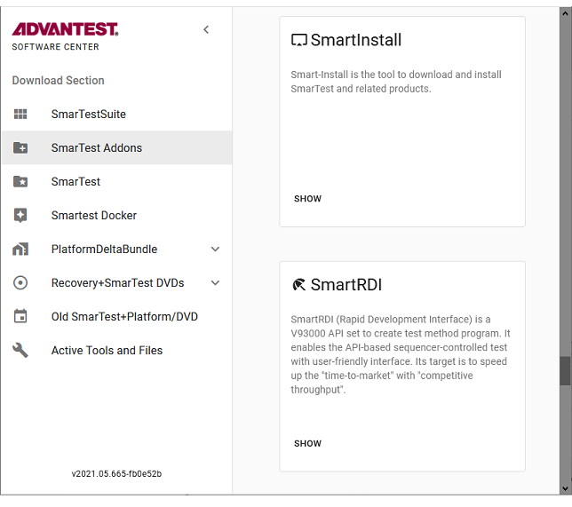
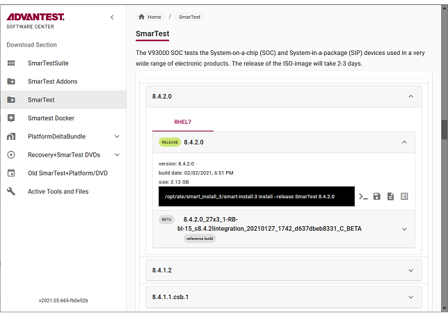
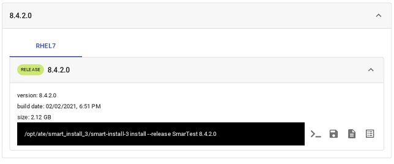

Using the Advantest Software Center
SmarTest software can be downloaded or directly installed from the Advantest Software Center.
Prerequisites
Make sure the following prerequisites are met:
- The workstation operating system is Red Hat Enterprise Linux ≥ 7.2.x or the required operating system version for the software to be to be installed, whichever is the higher.
-
You have a my.advantest.com account with access to 'Software Center' and access to the software areas of interest, such as 'smart install 3' to install SmarTest Work Center software. You can request an account at: https://login.myadvantest.com/ and ask for access to "Software Center" and "smart install 3".
-
Make sue that you have installed the SmartInstall add-on required to install packages from the Software Center. For details, see Downloading and installing the SmartInstall add-on.
Where to find available products
- Open the Advantest Software Center in a browser: https://softwarecenter.advantest.com/
- Login with your credentials.
The Software Center home page is displayed:

SmarTest software is located under SmarTest.
SmarTest add-ons for licensing, documentation, TCCT, TP360, Test Cell Access, and so on are located under SmarTest Addons.
Available software packages
To view the available packages for a particular software version:
- Select the product. For example SmarTest.
- Select a version. For example 8.4.2.0.
- Select the host operating system if required (Red Hat Enterprise Linux (RHEL) version).
- Click the expand button to view specific builds.

Viewing, downloading and installing a selected product
To view the details of a particular package for a particular software version, download it or install it, execute the following steps:
- To view the details of a particular package for a particular software version, select a
product package.
The build date and size (1) are displayed along with the installation command (2).
- To copy the installation command to the clipboard, click .
Running this command installs the package to your system controller workstation. For details, see smart-install-3 command line tool and Downloading SmarTest software.
- To download the selected package to your local workstation, click . For details, see Downloading SmarTest software.

Functional changes
- Introduced in SmarTest 8.4.3